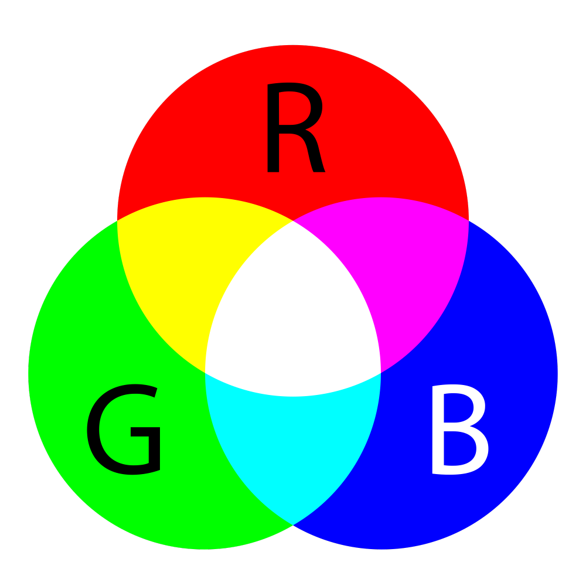

Je hebt vast wel eens van resolutie gehoord dit zijn kleine pixels in een computerscherm. Deze pixels bestaan uit 3 lampjes. RGB is niet alleen van die leuke lampjes voor op je kamer. Of de regenboogkleurende ventilatoren in een mooie maar vooral duure computer. RGB staat ook ergens voor namelijk: Red, Blue en Green. Dit zijn de 3 individueelen lampjes van een computerscherm. Door de helderheid van elk lampje aan tepassen kan je veel kleuren creeeren op een computerscherm. 